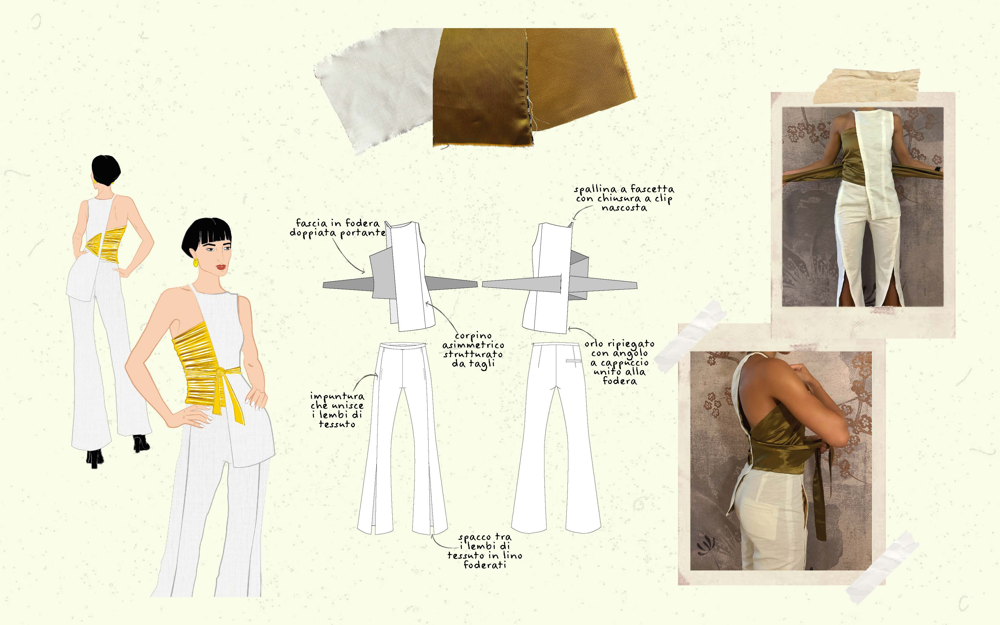

We loved these garments, we wanted them, bought them and used them to exhaustion. They were as important as the moments they witnessed. Now, even if they are worn out and out of fashion, we can’t part with them. We feel like we have a responsibility towards the objects we love. An instinct of protection. The used textiles are in fact imbued with personal memories. They carry their story with them. Through upcycling, the designer has the opportunity to rework the narrative of the garment, in respect of his previouslife, reconferencing the value and dignity lost. With this decomposition, the object is freed from its original form and function. Each step of the deconstructive process is aimed at opening, exposing, expanding and complicating the original content, allowing the dress to release its unimaginable future possibilities. By freeing it of its form, the garment reveals itself in its essence and complexity, history and dreams. Dreams of rebirth, dreams of future scenarios, dreams of reappropriation of the self. So, thanks to deconstruction, the abandoned item shows itself for what it can be. The experience of the old garment remains, the appearance adapts to the time, to ensure its contemporaneity. In the awareness that an object is subject to transience and cannot remain desirable in perpetuity, through a careful sartorial ability is renewed the attractiveness according to the tastes and canons of modernity.
